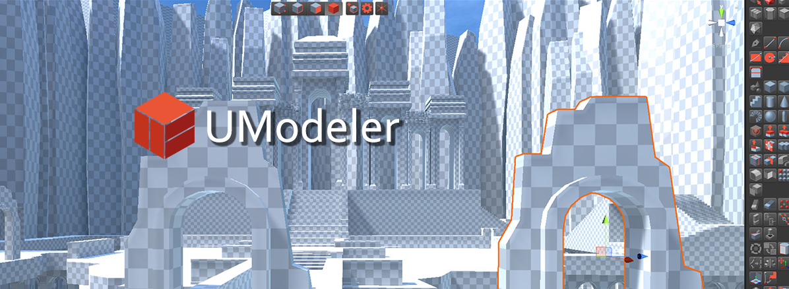

UModeler 2019¶

Version 2.5 - 2019.2.26¶
- New Feature : Add UV Auto Layout function to the polygon tool.
- New Feature : Add Color palettes to Vertex/Polygon color tools
- New Feature : Introduce the Slot concept in Smoothing Group Tool
- New Feature : Introduce the Slot concept in Material Tool
- New Feature : Add Direct UV transform using Move/Rotate/Scale tools in the Scene view.
- New Feature : Pre-selection Vertex/Edge/Polygon highlight
- New Feature : Enable shortcuts in UV Editor
- Enhancement : Improve Shortcut Setting UI in Preference to display only names of tools belonging to the selected group.
- Enhancement : Add a button to assign a material to the whole object at once to the Material tool.
- Enhancement : Allow camera panning in UV Editor by LMB dragging with ALT holding.
- Enhancement : Allow the shorcut of New UModeler Tool all the time even when no umodeler object is selected.
- Enhancement : Make the cone slicing possible using Loop Slice tool.
- Change : Assgin New UModeler tool’s default shortcut as
CTRL + SHIFT + M- Change : Change the default shortcuts for vertex/edge/polygons tools to Shift + 1/2/3
- Change : Deprecate Edge Extrusion tool
- Change : Update the help doc links
- Change : Display the tool bar icons in the text based menu on UV editor.
- Change : Add Confirm/Cancel buttons to the Property window of Clone Tool
- BugFix : Fix stack overflow errer of Loop Slice Tool.
- BugFix : Fix a bug not updating collider immediately.
- BugFix : Fix a bug drawing a unexpected selection quad just when UV Editor is opened.
Version 2.4 - 2019.1.4¶
- Enhancement : Kept Toolbar visible while the text menu is enabled.
- Enhancement : Stored the manu type in the registry whenever the menu is changed between text based and icon based
- BugFix : Fixed not bringing the Meshfilter mesh when UModeler component is added to a game object with MeshFilter component.
- BugFix : Gizmo scaling issue occuring when a couple of scene views are opened.
- BugFix : Discarded .asset export in Export tool. It can be replaced with .prefab export.
- BugFix : Invisible UModeler object with a parent prefab after its parent prefab is placed on the scene.